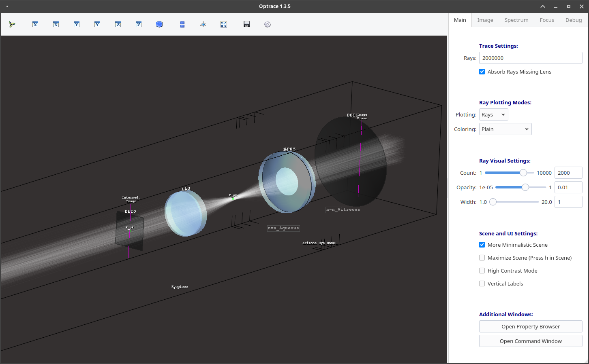
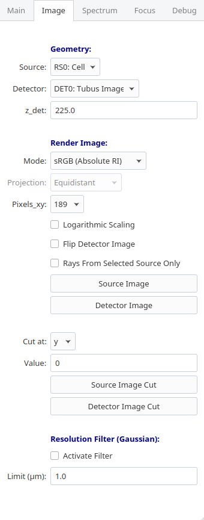
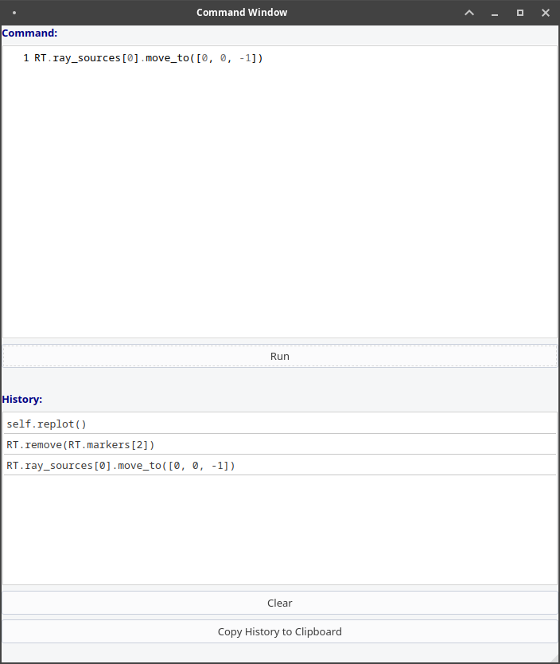
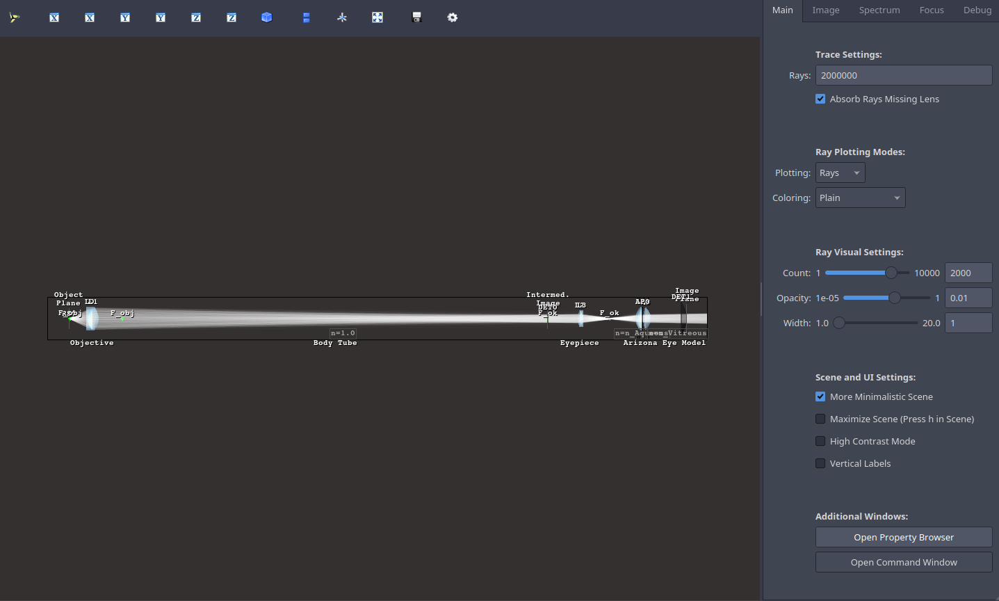

4.11. Using the GUI#
4.11.1. Loading the GUI#
Example
As always, import the main optrace namespace:
import optrace as ot
To import the TraceGUI into the current namespace write:
from optrace.gui.trace_gui import TraceGUI
Let’s create some exemplary geometry:
RT = ot.Raytracer(outline=[-10, 10, -10, 10, -10, 60])
disc = ot.CircularSurface(r=3)
RS = ot.RaySource(disc, pos=[0, 0, -5])
RT.add(RS)
eye = ot.presets.geometry.legrand_eye()
RT.add(eye)
A TraceGUI takes the raytracer as argument:
sim = TraceGUI(RT)
The GUI is now assigned to the sim variable, but has not started yet.
For running the GUI you need to write:
sim.run()
This loads the main window and also raytraces the geometry.
Parameters
When creating the GUI, additional properties can be assigned. For instance, setting the scene to high contrast mode and increasing the amount of rays traced, we can write instead:
sim = TraceGUI(RT, high_contrast=True, ray_count=2000000)
Available properties are discussed in Section 4.11.4.
UI Theme
The TraceGUI uses Qt5 as UI backend. Qt5 supports different themes that can be controlled with the ui_theme parameter on the TraceGUI initialization.
sim = TraceGUI(RT, ui_theme="Windows")
Details on styles can be found in the Qt documentation.
Available themes depend on your system and Qt installation, but can be extended using plugins.
Normally, at least styles "Windows" and "Fusion" should be available on all systems.
Most notably, dark themes like in Fig. 4.39 prove especially useful in low light environments.
4.11.2. UI Overview#
4.11.2.1. Full UI#
{kind=link}

4.11.2.2. Scene#
Details on the scene navigation are found in the mayavi documentation here under “Mouse Interaction”. There are also keyboard shortcuts available that are discussed in Table 4.15.
4.11.2.3. Toolbar#
The mayavi scene toolbar is positioned above the scene. It includes buttons for the pipeline view window, different perspectives, fullscreen, screenshot saving and scene settings. Details are found in the mayavi documentation here.
4.11.2.4. Sidebar#
The sidebar is positioned at the right hand side of the scene and consists of multiple tabs:
Main Tab |
Includes settings for raytracing, scene visualization and buttons for opening additional windows |
|---|---|
Image Tab |
Features options for rendering source and detector images |
Spectrum Tab |
Settings for the rendering of source or detector light spectrum histograms |
Focus Tab |
Option View and result output for finding the focus in the optical setup |
Debug Tab |
Advanced options, especially for development of optrace |
The following figure shows all tabs except the debug tab. The UI elements will be discussed in the following sections.

|
 |

|

|
{kind=link}
4.11.2.5. Additional Windows#
Beside the main window there are additional windows in the interface. These will be discussed in Section 4.11.5, but a quick overview is given here:
Window |
Access |
Function |
|---|---|---|
Pipeline View |
Leftmost button in the toolbar |
Access to viewing and editing the mayavi graphical elements |
Scene Settings |
Rightmost button in the toolbar |
mayavi settings, including lighting and scene properties |
Command Window |
button at the bottom of the main tab in the sidebar |
command execution and history for controlling the GUI and raytracer |
Property Browser |
button at the bottom of the main tab in the sidebar |
overview of raytracer, scene and ray properties as well as cardinal points |
4.11.3. The Scene#
4.11.5. Additional Windows#
4.11.5.1. Pipeline View#
https://docs.enthought.com/mayavi/mayavi/pipeline.html
https://docs.enthought.com/mayavi/mayavi/mayavi_objects.html

4.11.5.2. Property Viewer#

4.11.5.3. Command Window#
{kind=link}

4.11.6. Tips and Tricks#
Keyboard Shortcuts
The following keyboard shortcuts are available inside the scene:
Shortcut |
Function |
|---|---|
|
set scene view to default y view |
|
maximize scene (hide toolbar and sidebar) |
|
toggle minimalistic view option |
|
toggle high contrast mode |
|
toggle plotting type of rays (points or beams) |
|
render detector image with the current settings |
|
randomly re-chose the plotted rays |
|
save a screenshot of the scene |
|
set the camera focal point to the position of the mouse.
Useful for scene rotations, since the geometry is rotated around this point.
|
|
change lighting properties |
|
anaglyph view (view for red-cyan 3D glasses) |
Changing the UI Theme Externally
UI themes can also be set externally, however any theme set inside the script overwrites the global style.
From outside the theme can either be provided by setting an environment variable:
env QT_STYLE_OVERRIDE=kvantum-dark python ./examples/microscope.py
…Or by providing a style parameter when calling the script/intepreter.
python ./examples/microscope.py -style kvantum-dark
Note that the mentioned style needs to be supported by your Qt installation. The above syntax is that for an Unix system and can differ for other systems.
{kind=link}

Fig. 4.39 UI with the dark theme.#
Passing Properties to the GUI object
Under some circumstances it is useful to provide additional parameters like properties or functions to the GUI so they can be accessed in the control window. For instance, we implemented a function that changes the geometry in some specific way or steps through different source or lens constellations.
As example, the user can define some function func inside his script and pass it to the TraceGUI:
def func(a, b, c):
# do some complicated things inside here
...
sim = TraceGUI(RT, important_function=func)
func get assigned to the TraceGUI under the name important_function. Therefore it can be used inside the command window as self.important_function.
This is not limited to functions but works for arbitrary objects, however note that the assigned name must not collide with any variable or method name already implemented in the TraceGUI class.